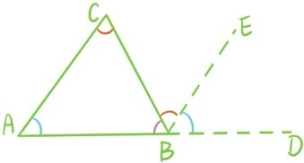
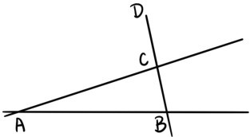
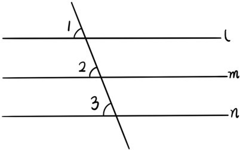
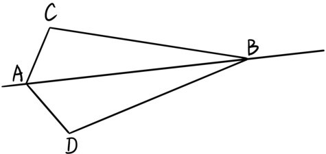
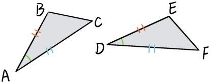
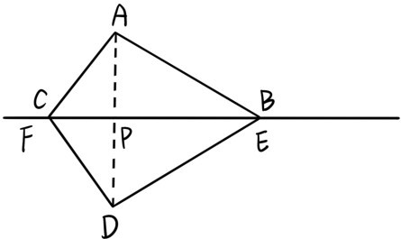
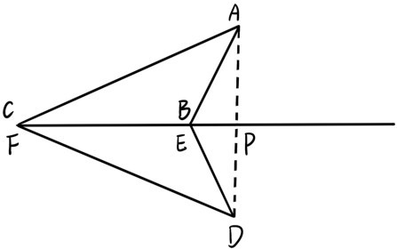
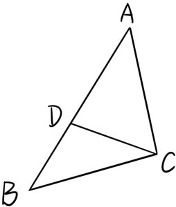

将顶点为A，B，C的三角形记作△ABC，它的3个内角分别是∠BAC，∠ABC和∠ACB，所对应的边分别是线段BC，AC和AB。
定理2.1 三角形内角和等于180°。
证明：如下图所示，延长AB至点D，根据公理3，可以过点B作直线BE平行于直线AC。根据公理4，∠CAB=∠EBD，根据定理1.3，∠C=∠CBE，所以∠CAB+∠ABC+∠C=∠EBD+∠ABC+∠CBE=180°（证毕）。

当还没画出两条辅助的线BD和BE时，并不能直接看出为什么三角形内角和总会等于180°，而一旦画出这两条辅助的线，问题就变得非常明朗了，这种添加辅助线的方法在这一章中将不断用到。在上图中∠CBD为△ABC的（与内角∠ABC相邻的）外角。上面的证明过程也得到下面这个定理：
定理2.2 三角形的外角等于与它不相邻的两个内角的和。因此三角形的外角总是大于与它不相邻的内角。
定理2.3 同位角相等，两直线平行。
证明：（反证法）如图所示，假设这两条直线相交于点A，且同位角∠ABD=∠ACD，根据定理2.2，∠ACD>∠ABD，所以假设不成立，这两条直线平行（证毕）。

定理2.4 平行于同一条直线的两直线互相平行。
证明：假设直线l平行于直线m与直线n，如下图所示，存在一条直线与l，m，n同时相交。根据公理4，∠1=∠2且∠1=∠3，所以∠2=∠3。再根据定理2.3，直线m与直线n平行（证毕）。

两个三角形△ABC和△DEF是全等的，记作△ABC≌△DEF，若其中一个三角形可以通过移动（不改变形状大小）和另一个三角形重合，其中点A，B，C分别与点D，E，F重合。注意虽然两个三角形都是在同一个平面，但这里的移动过程并不限于在平面内。例如下图△ABC和△ABD的全等是通过翻转重合实现的。

定理2.5 （边角边定理）在△ABC和△DEF中，若AB=DE，AC=DF且∠A=∠D，则△ABC≌△DEF。

证明：因为AB=DE，AC=DF且∠A=∠D，所以可以移动△ABC，使得∠A与∠D重合，线段AB与DE重合，线段AC与DF重合，这两个三角形自然也重合（证毕）。
定理2.6 （角边角定理）在△ABC和△DEF中，若AB=DE，∠A=∠D且∠B=∠E，则△ABC≌△DEF。
证明：因为AB=DE，∠A=∠D且∠B=∠E，所以可以移动△ABC，使得线段AB与DE重合，∠A与∠D重合，∠B与∠E也重合。因此直线AC、直线BC分别和直线DF、直线EF重合，这时交点C和交点F也重合，两个三角形自然也重合（证毕）。
定理2.7 在△ABC中，若AB=AC，则∠B=∠C。
这样的三角形为等腰三角形，更特殊地是三个边都相等的三角形，称为等边三角形。
证明：因为AB=AC，∠A=∠A，根据边角边定理，△ABC≌△ACB，所以∠B=∠C（证毕）。
注意这里△ABC与它自身的全等是通过翻转三角形，让∠A和∠A重合，AB和AC重合。利用这个定理，我们将推导出三角形全等的第三种判别方法。
定理2.8 （边边边定理）在△ABC和△DEF中，若AB=DE，AC=DF且BC=EF，则△ABC≌△DEF。

证明：因为BC=EF，我们可以移动△DEF，使得点B和点E重合，点C和点F重合，并且使得△ABC和△DEF分别位于直线BC的两边。连结AD，则线段AD一定会与直线BC相交于一点P。根据定理2.5，∠CAP=∠FDP，∠BAP=∠EDP。接下来分成3种情况讨论：
第一，点P在线段BC上。则∠CAB=∠CAP+∠BAP=∠FDP+∠EDP=∠FDE，根据边角边定理，△ABC≌△DEF。
第二，点P在线段BC的靠近点B延长线上。则∠CAB=∠CAP-∠BAP=∠FDP-∠EDP=∠FDE，根据边角边定理，△ABC≌△DEF。

第三，点P在线段BC的靠近点C延长线上。同理可得△ABC≌△DEF（证毕）。
定理2.9 （大边对大角）在△ABC中，若AB>AC，则∠C>∠B。

证明：因为AB>AC，可以在线段AB上取一点D使得AD=AC。根据定理2.7，∠ACD=∠ADC，而根据定理2.2，∠ADC>∠B，所以∠ACB>∠ACD=∠ADC>∠B（证毕）。
这个定理是指三角形中越大的边所对的角也越大，简称大边对大角。
提问时间
请证明下面3个定理：
定理2.10 在△ABC中，若∠B=∠C，则AB=AC；
定理2.11 （大角对大边）在△ABC中，若∠C>∠B，则AB>AC；
定理2.12 等边三角形的内角都是60°。